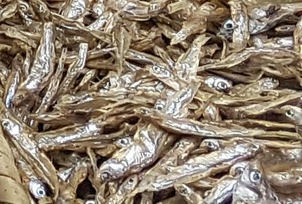

Dagaa / Silver Cyprinid

[Dagaa (Tanzania, Uganda, Kenya); Mukene (Uganda); Omena (Kenya);
Silver Cyprinid, Lake Victoria Sardine; Rastrineobola argentea]
This is an important food fish caught in Lake Victoria and other lakes
and rivers feeding into the Nile. Dagaa is silver with a prominent
lateral stripe and a lateral line that is very low on the body. It is the
only fish native to Lake Victoria that survives in great numbers after
introduction of Nile Perch and Nile Tilapia.
This fish can grow to just over 3 inches (8 cm) long, and is caught at
night using lights, then sun dried. Dagaa is sold and distributed through
the southern East African region for use as both human food and chicken
feed. While it looks very much like
Kapenta, they are Herrings, and Dagaa is a Carp. IUCN Red Listed LC
(Least Concern).
Photo by George Jaimi (heavily cropped) distributed under
license Creative Commons
Attribution-ShareAlike v4.0 International.
More on Carp Family.
The largest catch of this fish is during the rainy season, but they
do not dry well then (they are still just spread out on sand, old nets
or rocks to dry. Salting and Smoking are not used). The rainy season
catch, being of poor quality, is used mainly for chicken feed.
Buying:
I have not seen this fish for sale in North
America in markets or on-line.
Scales:
Like other carp, this fish is completely covered
with large scales with fairly good adhesion.
Cooking:
This fish is cooked in various ways, but these steps
are fairly representative. They are adapted from Recipe Book for
Tanzania, published in 1965 for use in Tanzania.
- Dry pan fry the dried fish until it turns golden brown.
- Rub between the palms of your hands to remove scales and sand.
- Wash thoroughly. Boiling water may be used. Drain well.
- Prepare a pan with Tomatoes, Onions, and Red Chili cut small. Cilantro
and Garlic may be included, and Salt to taste. Add Oil and fry until
soft.
- Add Water, bring to a boil and add Dagaa. Simmer slowly until most
of the water is gone.
- Serve with Rice, Ugali, Potatoes, or mashed Bananas.
sf_dagaaz 180805 - www.clovegarden.com
©Andrew Grygus - agryg@clovegarden.com - Photos
on this page not otherwise credited © cg1
- Linking to and non-commercial use of this page permitted